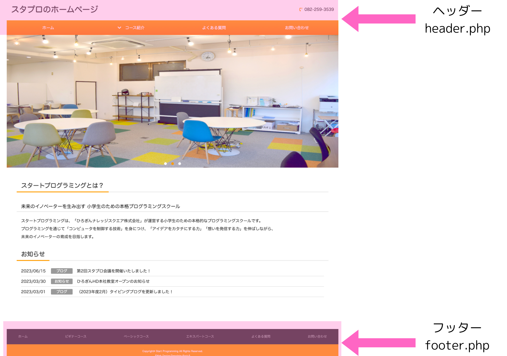
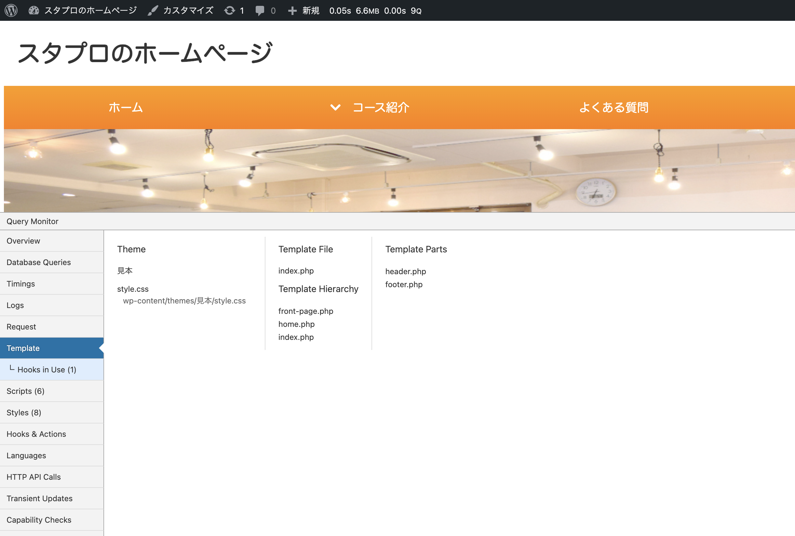

ワードプレスでは、ヘッダーやフッターなどのパーツを共通化して使う（1つのファイルに命令を書き、そのファイルを使い回す）という考え方があります。
例えば、これまでのHTMLの学習だと、ヘッダーの内容を変えたい時は全てのページのヘッダーのコードを編集しなければなりませんでした。
しかし、パーツを共通化して使うことで、1箇所を書き換えると全部のヘッダーに内容が適用されるので、同じ命令を何度も書かなくてよくなり、メンテナンスがとても楽になります。
今回のサイトでは、画像の箇所がヘッダーとフッターになるので、ここを分割化していきます。

ヘッダーは「header.php」というファイル名に、フッターは「footer.php」というファイル名で分割化します。
まずは二つのファイルを作る必要があるので作っていきましょう！
「header.php」と「footer.php」が作れたら、それぞれのファイルにプログラムを入れていきます。
「header.php」はヘッダーの情報を読み込ませるためのファイルなので、現在「index.php」に書かれているコードから
ヘッダー部分に該当するコードを抜き取り、コピーして「header.php」に貼り付けをします。
そして、「index.php」にヘッダーを読み込む命令を書かないといけないので、一番上の箇所に
< ?php get_header();?> と記入します。
これを書くことで「header.php」を読み込むことができます。
「footer.php」も同様に、コードを抜き取り貼り付けをしていきます。
「footer.php」を読み込むためには、コードの一番下に< ?php get_footer();?> と記入します。
動画と同じように実行し、サイトがきちんと読み込めていれば成功です！
これでファイルの分割化が出来ました！
開発行う上でとても便利なプラグイン「QueryMonitor」というものをインストールしていきます。
プラグインとは、ワードプレスでのサイト制作の中で新しい機能を追加するための拡張機能のことです。
具体的に、お問い合わせフォームを自動で作ってくれるものや、セキュリティを強化する機能など、とても多くの種類のプラグインがあります。
今回はその中の一つである「QueryMonitor」をインストールします。
「QueryMonitor」というプラグインを使えば、今表示されているページがどのファイルで表示されているのかを見ることが出来ます。
これが後々活躍してくるので、使い方と見方を覚えましょう！
現在のサイトのトップページは「index.php」で表示されているので「Template File」の下に「index.php」と表示されています。
これは「今表示されているページが「index.php」で書かれた部分を表示していることを示しています。

このように「今どのページが表示されているのか」という確認が今後たくさん出てくるので、たくさん使っていきましょう！
なし